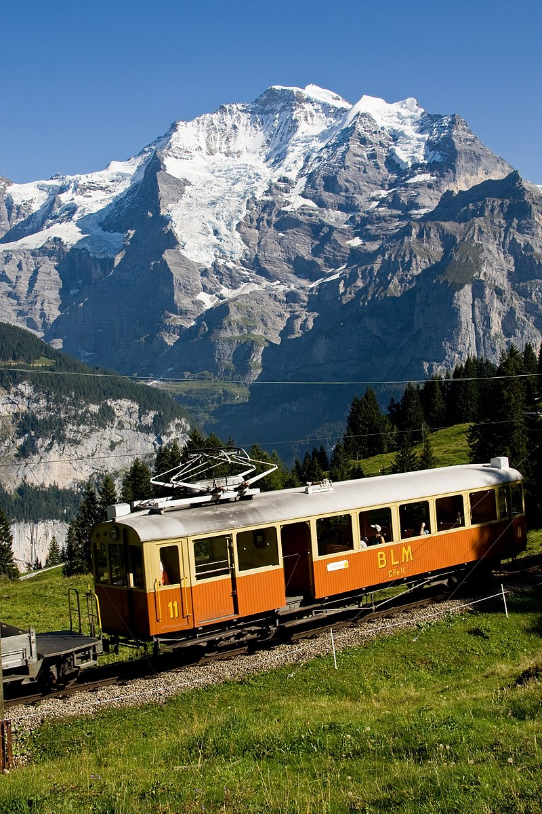
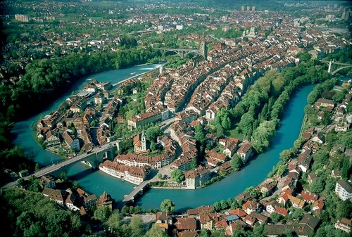
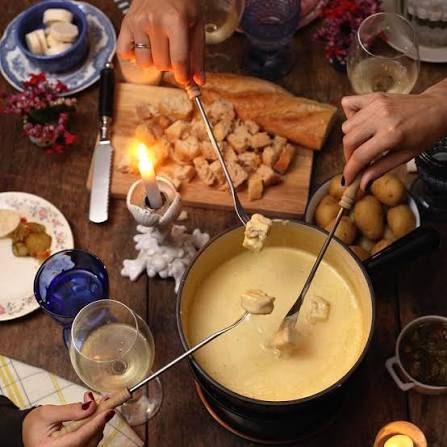
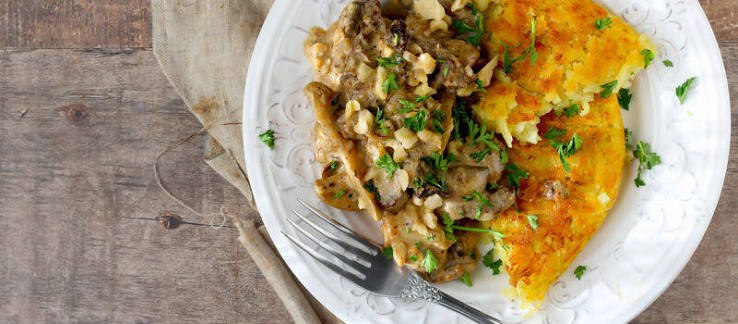
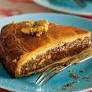

Визначні пам'ятки
Маттергорн

Маттергорн (нім. Matterhorn, італ. Cervino) — гора у Пеннінських Альпах на кордоні Італії та Швейцарії. Ця сьома за висотою гірська вершина Альп розташована між швейцарським населеним пунктом Цермат та італійським Червінія.
Юнгфрау

Юнгфрау — один з 29 чотиритисячників Швейцарських Альп та одна з головних вершин Бернських Альп, розташована між північним кантоном Берн та південним кантоном Вале.
Женевське озеро

Жене́вське о́зеро (Озеро Лемáн) — прісноводне озеро на кордоні Швейцарії та Франції, у міжгірській западині між Альпами та горами Юра.
Берн

Берн — де-факто столиця Швейцарії, четверте за кількістю населення місто країни. З 1983 року Стара частина Берна визнана об'єктом Світової спадщини ЮНЕСКО.
Кухня та гастрономія
Кухня Швейцарії — це унікальний синтез кулінарних традицій Німеччини, Франції та Північної Італії, де головне місце посідають вишукані сири, м'ясо та шоколад.
Фондю (Fondue)

Фондю — це традиційна швейцарська страва з розігрітого сиру, яку подають у спеціальному посуді (какелоні або фондюшниці) із підігрівом.
Цюрихський гешнетцлетесь (Zürcher Geschnetzeltes)

Традіційна швейцарська страва з ніжних смужок телятини у вершково-грибному соусі з додаванням білого вина, яка класично подається з картопляними рьошті.
Енгадинський горіховий торт (Bündner Nusstorte)

Традиційний швейцарський десерт із кантону Граубюнден. Це пиріг з пісочного тіста із солодкою та густою начинкою з волоських горіхів, карамелі та вершків.
Rivella
Культовий швейцарський безалкогольний газований напій, виготовлений на основі молочної сироватки з додаванням суміші фруктів і трав.
Культура та традиції
Культура Швейцарії сформувалася під впливом кількох мовних регіонів, зберегши глибоку повагу до місцевих традицій та унікального способу життя. Багатомовність є природною частиною щоденності.
Особисті враження
Швейцарія справляє враження країни, де все доведено до досконалості, а людина живе в абсолютній гармонії з природою. Найбільше вражає контраст між сніговими альпійськими піками та дзеркальними озерами.